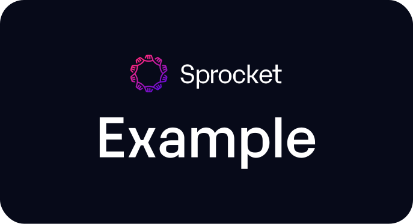

Workflows
Full Directory
docs
Other
test
☀︎
docs
/
file
/
test
Search results
Loading...
Workflow
test
No description provided
WDL Version
1.3
Nested Inputs Not Allowed
RUN WITH
Unix
Windows
sprocket run --target test
file.wdl
file.wdl
[INPUTS]...
Inputs
Outputs
Name
Type
Default
Description
ON THIS PAGE
Inputs
Outputs
↑
Back to top